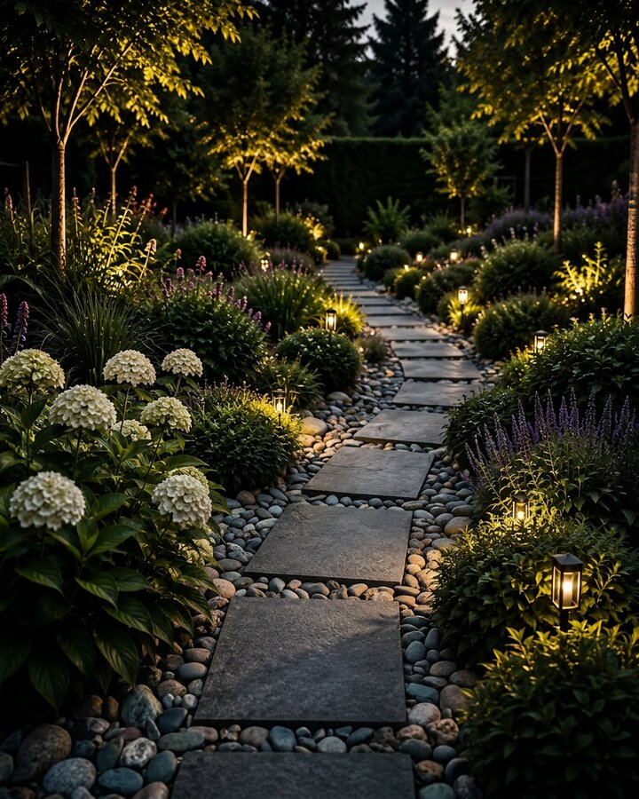

Kertépítés
Álomból valóság. Egy kert, ami Önről szól.
Teljes körű kertépítési szolgáltatásunkkal megálmodjuk és megvalósítjuk az Ön számára tökéletes kertet – a tervezéstől a kivitelezésig.
KÉREK AJÁNLATOTEGYEDI TERVEZÉS
Az Ön igényeihez és otthonahoz igazodó, egyedi kerttervek.
TELJES KÖRŰ KIVITELEZÉS
A tervezéstől a megvalósításig mindent egy kézben tartunk.
MINŐSÉGI ANYAGOK
Csak prémium minőségű növényeket és tartós anyagokat használunk.
HATÁRIDŐ GARANCIA
Precíz tervezés és szervezés a határidők pontos betartásával.
SZAKÉRTŐ CSAPAT
Tapasztalt kertépítőink szenvedéllyel és odafigyeléssel dolgoznak.
GARANCIA
Munkánkra és növényeinkre is garanciát vállalunk.
TERVEZÉSTŐL A MEGVALÓSÍTÁSIG
Egy kert, amely
harmóniát teremt.
Kertépítési szolgáltatásunk során a funkcionalitást és az esztétikumot ötvözzük, hogy olyan kültéri teret hozzunk létre, amely minden évszakban örömet nyújt.
- Személyre szabott kerttervezés
- Növénykiültetés és gyepszőnyeg telepítés
- Öntözőrendszer kiépítés
- Burkolatok, teraszok és kerti utak
- Kerti világítás és kiegészítők
ArtGarden
TUDJON MEG TÖBBET

AMIT KÍNÁLUNK
KAPCSOLATFELVÉTEL
Vegye fel velünk a kapcsolatot telefonon vagy e-mailben.
HELYSZÍNI FELMÉRÉS
Szakértőnk felméri a területet és megismeri az igényeit.
TERVEZÉS
Egyedi kerttervet készítünk az Ön elképzelései alapján.
ÁRAJÁNLAT
Részletes árajánlatot adunk a terv és igények szerint.
KIVITELEZÉS
Precízen és határidőre megvalósítjuk a kertet.
ÁTADÁS
Átadjuk kertjét, és tanácsokkal segítjük a gondozást.